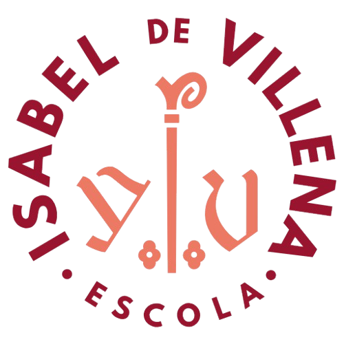

Unitat 4. Origen i evolució dels éssers vius - 74
- Evidenciés de l'evolució - 84
- Arbres filogenètics - 90
- Mapa conceptual - 91
- Llegim ciència - 91
- Activitats finals - 92
- Pràctica de laboratori - 94
- Posa't en situació - 95

Les evidències de l’evolució són totes les proves que indiquen que els éssers vius han anat canviant amb el temps i que no han estat sempre iguals. la idea clau és que totes les espècies tenen algun tipus de relació entre elles, perquè venen d’avantpassats comuns, encara que amb el pas dels anys s’han anat diferenciant.
Les evidències anatòmiques són de les més fàcils d’entendre perquè es basen en comparar el cos dels éssers vius. quan parlem d’òrgans homòlegs, ens referim a estructures que tenen la mateixa base interna però poden fer funcions diferents. per exemple, l’ala d’un ratpenat i el braç humà tenen ossos molt semblants. en canvi, els òrgans anàlegs fan la mateixa funció però no tenen la mateixa estructura, com les ales dels insectes i les dels ocells. després hi ha els òrgans vestigials, que són estructures que ja no tenen una funció clara però abans sí que la tenien.
Les evidències paleontològiques es basen en els fòssils, que permeten veure com eren els organismes del passat i com han anat canviant amb el temps.
Les evidències embriològiques mostren que els embrions de diferents espècies són molt semblants en les primeres fases del desenvolupament.
Les evidències biogeogràfiques expliquen la distribució dels éssers vius al planeta i la seva relació amb la història dels continents.
Finalment, les evidències bioquímiques es basen en comparar l’adn i les proteïnes. com més semblança hi ha, més proper és el parentiu evolutiu.
Un arbre filogenètic és un diagrama amb forma d’arbre que mostra les relacions evolutives entre diverses espècies que comparteixen un antecessor comú.
L’ancestre comú més recent se situa a la base de l’arbre i les espècies es troben a les puntes de les branques.
Cada node representa un ancestre comú i un procés d’especiació.
Els internodes connecten els nodes i poden indicar característiques compartides.
Els arbres filogenètics representen la distància entre espècies.
Els pulmons ja eren presents en l’avantpassat comú de granotes, falcons i gats.
L’aparició de característiques com la cèl·lula eucariota, el moviment o l’esquelet ossi es mostra al llarg de l’arbre.
Actualment es considera indiscutible que les cèl·lules eucariotes es van originar a partir de cèl·lules procariotes preexistents.
Durant molt de temps es va acceptar l’explicació neodarwinista, basada en l’acumulació de mutacions.
Lynn margulis va proposar una teoria diferent: les cèl·lules eucariotes es van formar per la fusió de cèl·lules procariotes.
Els mitocondris i els cloroplasts provenen de bacteris que van quedar dins d’altres cèl·lules en una relació de simbiosi.
Aquesta teoria va ser molt criticada al principi.
Més tard, estudis genètics van confirmar la teoria de l’endosimbiosi.
Avui dia és una explicació acceptada sobre l’origen de les cèl·lules eucariotes.